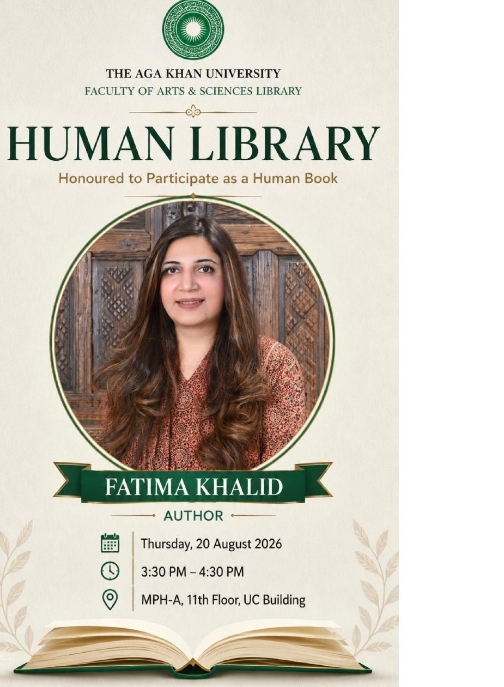
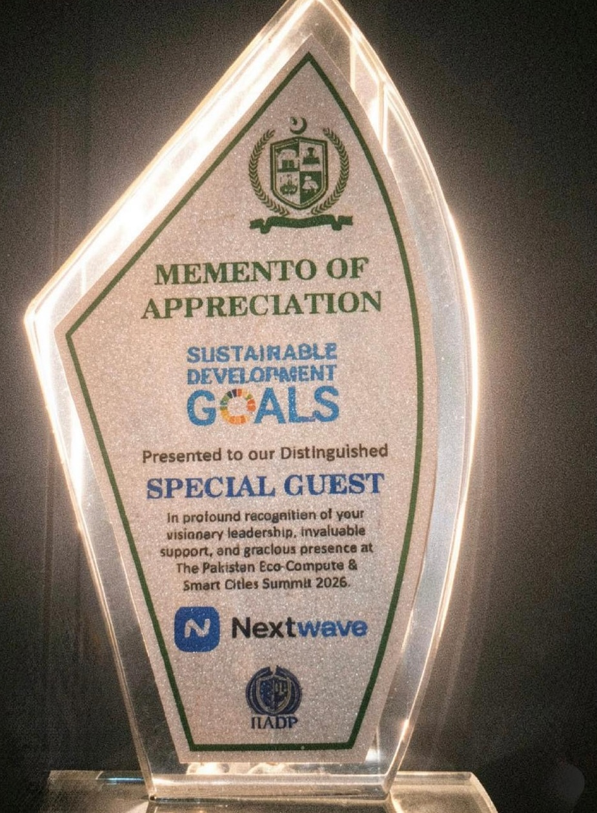

Speaking themes
Questions made
public.
Talks can be shaped for universities, leadership forums, technology audiences, cultural institutions and conversations about identity and society.
01
AI & Humanity
02
Conscious Leadership
03
Digital Governance
04
Self-Awareness
05
Women & Motherhood
06
Human Potential

Human Library · Aga Khan University
Not every book is bound by pages.
Fatima participated as a Human Book at the Aga Khan University Faculty of Arts & Sciences Library — an encounter built around direct conversation and lived experience.
“Stories are not only written. Some are lived.”

Recognition / 2026
Ideas where technology meets society.
Recognised as a Distinguished Special Guest at the Pakistan Eco-Compute & Smart Cities Summit 2026, reflecting Fatima's growing public engagement around technology, leadership and human values.
Selected engagement
From page
to room.
Public engagement has included universities, libraries, radio conversations, cultural institutions and technology forums.
01
D-8 Health Summit 2026
↗
02
Pakistan Eco-Compute & Smart Cities Summit
↗
03
Aga Khan University Faculty of Arts & Sciences Library Human Library
↗